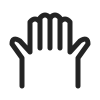

MATCHBOOK LEARNING · MORNING MEETING
MATCHBOOK LEARNING · MORNING MEETINGShow-Me Cards · Tarjetas para mostrar
Cut on the lines. Students hold up a card during Connect · Share so every student answers at the same time, with or without speaking.
 Choice AOpción A
Choice AOpción A Choice BOpción B
Choice BOpción B I agreeEstoy de acuerdo
I agreeEstoy de acuerdo I want to add onQuiero agregar
I want to add onQuiero agregarRehearse the Routine
Name: _____________________


Students: Practice one routine with the class: hallway, line, or cafeteria. Write what Safe, Respectful, and Responsible look like there.
Estudiantes: Practica una rutina con la clase: pasillo, fila o cafetería. Escribe cómo se ven Seguro, Respetuoso y Responsable ahí.
My commitment: Today, in ___, I will ___.
Hoy, en ___, voy a ___.
Family chat: Which routine at home or school is hardest after a break?
Charla en familia: ¿Qué rutina en casa o en la escuela es más difícil después de un descanso?
Point, say, draw, dictate, or write.
My Testing Routine
Name: _____________________

Students: Practice three slow breaths together. Write your plan for a hard question and your helpful self-talk.
Estudiantes: Practica tres respiraciones lentas juntos. Escribe tu plan para una pregunta difícil y lo que te dirás para ayudarte.
My commitment: When a question is hard, I will…
Cuando una pregunta sea difícil, voy a…
Family chat: What helps you stay calm when something is hard?
Charla en familia: ¿Qué te ayuda a mantener la calma cuando algo es difícil?
Point, say, draw, dictate, or write.
Same Me, Every Room
Name: _____________________


Students: Practice entering a room the right way. Sort what changes and what stays the same.
Estudiantes: Practica entrar a un salón de la manera correcta. Clasifica lo que cambia y lo que sigue igual.
My commitment: In my new room or new class, I will…
En mi salón o clase nueva, voy a…
Family chat: What helps you get used to something new?
Charla en familia: ¿Qué te ayuda a acostumbrarte a algo nuevo?
Point, say, draw, dictate, or write.
Finish Strong Plan
Name: _____________________

Students: Name your dip: when do you usually slow down or quit? Write your climb-out moves.
Estudiantes: Nombra tu bache: ¿cuándo sueles ir más lento o rendirte? Escribe tus movimientos para salir del bache.
My commitment: When I hit the dip, I will…
Cuando llegue al bache, voy a…
Family chat: Tell about a time you kept going when you wanted to quit.
Charla en familia: Cuenta de una vez que seguiste cuando querías rendirte.
Point, say, draw, dictate, or write.